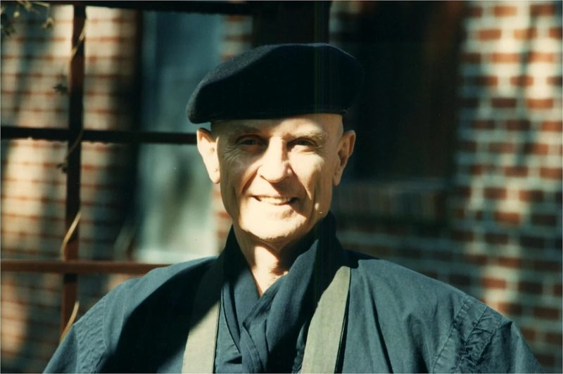

1933 – 2021 · Founder of This Temple
Robert Livingston Roshi
A New Yorker who served in the U.S. Army in Japan and Korea and later spent a decade running an international financial services firm in Europe, Robert Livingston retired from business to practice with Taisen Deshimaru in Paris. He became a close disciple and was made a teacher. Before his death in 1982, Deshimaru asked him to bring true Zen practice to America. Livingston founded the American Zen Association and New Orleans Zen Temple in 1983, and taught here until his death in early 2021.
Teachings
Kusen: On Practice & Life
Mondo: Questions & Answers
Kusen: On Practice & Life
Zazen
In zazen we have concentration and observation. Concentration in zazen is at first deliberate, conscious. We must concentrate on posture. Stretch the spinal column: head presses the sky, knees press the ground. The back is arched in the lower lumbar region. The collarbone is raised, this throws back the shoulders and the neck. Straighten your head, straighten your face. Everything hangs off the backbone.
Strong Mind
In order to have a strong practice, deep practice, in order to have a deep, strong life, you must develop a strong mind. How do we develop a strong mind? It's not by developing your brain power, not by thinking, not by gaining lots of knowledge, lots of information, storing up a lot of facts. In order to develop a strong, deep mind, you must not follow and run after every thought that arises out of your brain.
Sit
Zen Master Taisen Deshimaru was the greatest disciple of Master Kodo Sawaki, who brought the True Zen practice of Bodhidharma and Dogen back to life in Twentieth Century Japan. Upon the death of his master, Deshimaru followed the advice of Kodo Sawaki and brought True Zen to the West, where he taught for fifteen years until his death in 1982.
True Zen
When people approach Zen practice, they don't know what Zen practice truly is. People come, think they can sit and do meditation and somehow arrive at a state where they can escape their problems and troubles, escape the complications of the world. They are going to become concentrated, wiser, happier, healthier.
Life and Death
Yesterday, I was speaking about life and death in response to a mondo question. Today we have a short sesshin, where we can all come to understand life and death more deeply. We have three periods of zazen throughout the day, approximately six hours of zazen. It's not very much. But when we concentrate deeply, when our zazen becomes deep, strong, it's not a question of time.
Our lives
Our lives are not always happy, peaceful, calm. Things don't always go according to the way we think they should go, the way we want them to go. Our lives are our Zen practice. Zen practice is not separate, apart from our lives. Sometimes we get discouraged in life, sometimes we're not so happy, sometimes we get angry or disappointed or frustrated.
Our Time Together
The time we have together as a sangha is very short. We don't know what will happen in the future. Our future may not even exist. But our future can exist here and now. The time we spend practicing together - zazen, samu, ceremony, eating, sesshin, sleeping, all our lives - will have a deep influence.
Mondo: Questions & Answers
Mondo
Mondo by Robert Livingston Roshi. December 30, 4:00 pm What's the correct way to chant? Is chanting always in a rough, deep voice? How do you "drop" the organs during the exhalation? Should I concentrate on the inhalation as well? How do I deal with too much sexual energy? Is it good to not masturbate? How do I keep from having to swallow when I do zazen? How can I balance creating my own practice and following a mas…


Excerpted from the Temple’s teaching archive of Robert Livingston Roshi’s kusen and mondo, recorded at New Orleans Zen Temple.